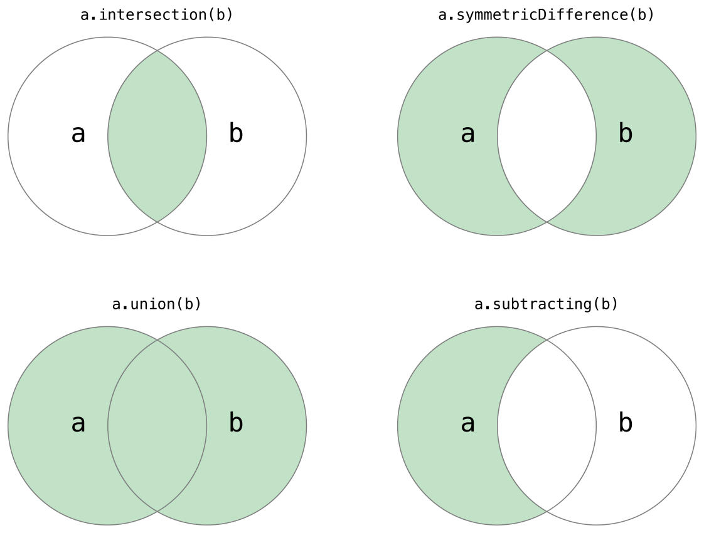
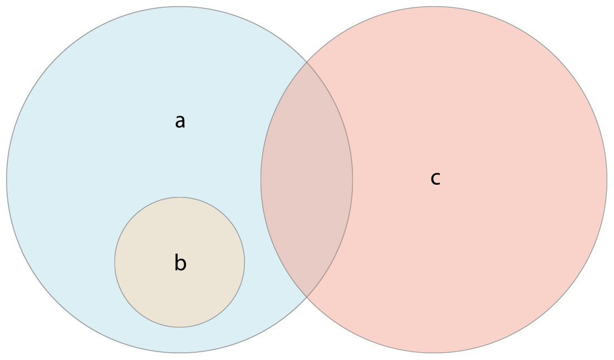

Swift4 基础之 集合 Set
/*
Set类型被写为Set<Element>，
这里的Element表示Set中允许存储的类型，
和数组不同的是，集合没有等价的简化形式。
*/
/*
创建和构造一个空的集合
*/
var letters = Set<Character>()
print("letters is of type Set<Character> with \(letters.count) items")
letters.insert("a")
letters = []
/*
用数组字面量创建集合
使用简化形式写一个或者多个值作为集合元素。
*/
var favoriteGenres: Set<String> = ["Rock", "Classical", "Hip hop"]
var favoriteGenres2: Set = ["Rock", "Classical", "Hip hop"]
/**
访问和修改一个集合
*/
/*
通过只读属性count，获得Set中元素的数量
*/
print("I have \(favoriteGenres.count)")
/*
使用布尔属性isEmpty作为一个缩写形式去检查count属性是否为0：
*/
if favoriteGenres.isEmpty {
print("As far as music goes, I'm not picky.")
} else {
print("I have particular music preferences.")
}
/*
调用Set的insert(_:)方法来添加一个新元素：
*/
favoriteGenres.insert("Jazz")
/*
通过调用Set的remove(_:)方法去删除一个元素，
如果该值是该Set的一个元素则删除该元素并且返回被删除的元素值，
否则如果该Set不包含该值，则返回nil。
另外，Set中的所有元素可以通过它的removeAll()方法删除。
*/
if let removedGenre = favoriteGenres.remove("Rock") {
print("\(removedGenre)? I'm over it.")
} else {
print("I never much cared for that.")
}
//favoriteGenres.removeAll()
/*
使用contains(_:)方法去检查Set中是否包含一个特定的值：
*/
if favoriteGenres.contains("Funk") {
print("I get up on the good foot.")
} else {
print("It's too funky in here.")
}
/*
遍历一个集合
在一个for-in循环中遍历一个Set中的所有值。
*/
for genre in favoriteGenres {
print("\(genre)")
}
/*
输出：
Jazz
Hip hop
Classical
*/
/*
Set类型没有确定的顺序，
为了按照特定顺序来遍历一个Set中的值可以使用sorted()方法，
它将返回一个有序数组，
这个数组的元素排列顺序由操作符'<'对元素进行比较的结果来确定.
*/
for genre in favoriteGenres.sorted() {
print("\(genre)")
}
/*
输出：
Classical
Hip hop
Jazz
*/
/*
集合操作
把两个集合组合到一起，判断两个集合共有元素，或者判断两个集合是否全包含，部分包含或者不相交。
*/
/*
使用intersection(_:)方法根据两个集合中都包含的值创建的一个新的集合。
使用symmetricDifference(_:)方法根据在一个集合中但不在两个集合中的值创建一个新的集合。
使用union(_:)方法根据两个集合的值创建一个新的集合。
使用subtracting(_:)方法根据不在该集合中的值创建一个新的集合。
*/
let oddDigits: Set = [1, 3, 5, 7, 9]
let evenDigits: Set = [0, 2, 4, 6, 8]
let singleDigitPrimeNumbers: Set = [2,3,5,7]
var temp = oddDigits.union(evenDigits).sorted()
print(temp)
/*
输出：
[0, 1, 2, 3, 4, 5, 6, 7, 8, 9]
*/
temp = oddDigits.intersection(evenDigits).sorted()
print(temp)
/*
输出：
[]
*/
temp = oddDigits.subtracting(singleDigitPrimeNumbers).sorted()
print(temp)
/*
输出：
[1, 9]
*/
temp = oddDigits.symmetricDifference(singleDigitPrimeNumbers).sorted()
print(temp)
/*
输出：
[1, 2, 9]
*/
/*
集合成员关系和相等
使用“是否相等”运算符(==)来判断两个集合是否包含全部相同的值。
使用isSubset(of:)方法来判断一个集合中的值是否也被包含在另外一个集合中。
使用isSuperset(of:)方法来判断一个集合中包含另一个集合中所有的值。
使用isStrictSubset(of:)或者isStrictSuperset(of:)方法来判断一个集合是否是另外一个集合的子集合或者父集合并且两个集合并不相等。
使用isDisjoint(with:)方法来判断两个集合是否不含有相同的值(是否没有交集)。
*/
let houseAnimals: Set = ["🐶", "🐱"]
let farmAnimals: Set = ["🐮", "🐔", "🐑", "🐶", "🐱"]
let cityAnimals: Set = ["🐦", "🐭"]
houseAnimals.isSubset(of: farmAnimals)
// true
farmAnimals.isSuperset(of: houseAnimals)
// true
farmAnimals.isDisjoint(with: cityAnimals)
// true
基本集合操作
下面的插图描述了两个集合-a和b-以及通过阴影部分的区域显示集合各种操作的结果。

- 使用intersection(_:)方法根据两个集合中都包含的值创建的一个新的集合。
- 使用symmetricDifference(_:)方法根据在一个集合中但不在两个集合中的值创建一个新的集合。
- 使用union(_:)方法根据两个集合的值创建一个新的集合。
- 使用subtracting(_:)方法根据不在该集合中的值创建一个新的集合。
集合成员关系和相等
下面的插图描述了三个集合-a,b和c,以及通过重叠区域表述集合间共享的元素。集合a是集合b的父集合，因为a包含了b中所有的元素，相反的，集合b是集合a的子集合，因为属于b的元素也被a包含。集合b和集合c彼此不关联，因为它们之间没有共同的元素。

- 使用“是否相等”运算符(==)来判断两个集合是否包含全部相同的值。
- 使用isSubset(of:)方法来判断一个集合中的值是否也被包含在另外一个集合中。
- 使用isSuperset(of:)方法来判断一个集合中包含另一个集合中所有的值。
- 使用isStrictSubset(of:)或者isStrictSuperset(of:)方法来判断一个集合是否是另外一个集合的子集合或者父集合并且两个集合并不相等。
- 使用isDisjoint(with:)方法来判断两个集合是否不含有相同的值(是否没有交集)。